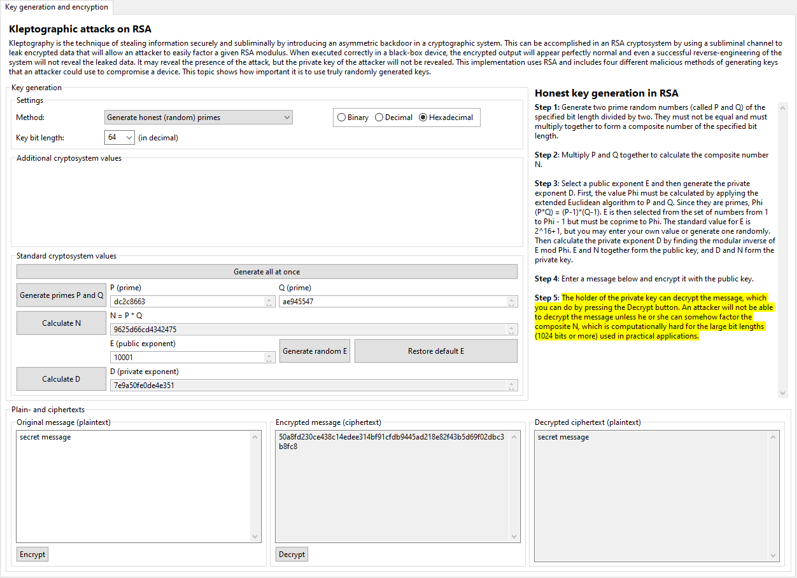

The honest key generation option exists in the Kleptography plug-in to serve as a counterexample to the various attack methods. This implementation of RSA is rather straightforward, but fails to include more advanced techniques, such as padding algorithms, to improve security. If you are unfamiliar with RSA or want more information as to how the basics of the algorithm function, you should first acquaint yourself with the RSA visualization plug-in.
It is, however, important to understand the basics of the graphical user interface of the kleptography plug-in, as it is not identical to that of the RSA plug-in. This first thing you may notice are the key generation settings on the top left side of the display:
The first dropdown menu allows you to choose a key generation algorithm, meaning which attack (if any) to carry out. You may notice that selecting different algorithms shows or hides extra buttons and text fields, since each setting has its own particular special aspects. You should also note that the intended flow is linear: each algorithm has a defined sequence that you should follow. You are always free to go back if you want, but skipping steps is impossible, just as it would be in real-world implementations.
The second dropdown menu lets you choose the key bit length (in decimal). This number must be even, since the primes used in the algorithm must be exactly half of that length of the keys. Keys less than 8 bits are disallowed because of the limited possible key values; there is no maximum limit, but be careful with large values - depending on which key generation algorithm you have selected and how fast your computer can execute the calculations, generating the primes may take several minutes. For honest key generation, a bit length over 1024 or 2048 is generally not recommended; with the pseudo-random generator and especially the SETUP attack, a bit length over 256 or 512 is not recommended. These are merely recommendations that you are free to ignore if you are patient or have a powerful computer at your disposal.
The last setting is the radix display option. You can choose to view the device's cryptographic values in either binary, decimal, or hexadecimal. Especially for large keys, hexadecimal is recommended, as it is the most compact.
Honest key generation has the simplest sequence of steps, although each of the attacks is essentially based on the same sequence. The first several steps are all based on the middle part of the display, where the internal functionality of the device is simulated as it generates a valid key pair. By pressing the buttons on the far left, you can follow this sequence. A description of each step is offered on the right side. You may enter your own prime numbers for P and Q, but they actually be prime and they must be of the proper length. The public exponent E can likewise be freely chosen, but it must be both less than and coprime to phi(P * Q). The default and recommended value for E is 2^16+1 (equal to 65537 in base 10 or 10001 in base 16), as this value provides optimal processing speed.
Once the key pair has been generated, you can use the lower part of the display to simulate the message sender and complete the sequence by encrypting a message with the public key of the receiver. Finally, you can simulate the receiver by decrypting the ciphertext with the private key.
Click here to return to the kleptography index or here to continue to the next page (using a fixed prime P).